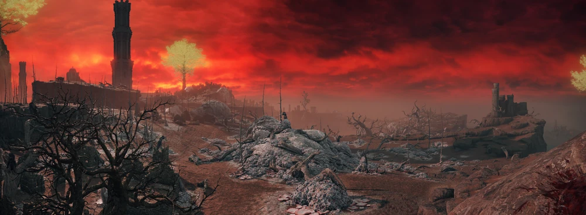

Showcasing all the major regions in The Lands Between.
The Lands Between
The Lands Between is a seemingly insular landmass consisting of multiple biomes, with lush grasslands in the south, a temperate central region, and a frozen, mountainous north. The skies of the Lands Between are dominated by the Erdtree, which is visible from almost everywhere above ground.
The Elden Ring resides in the Lands Between, which are ruled by its vessel, Queen Marika, and her consort, the Elden Lord. They ruled from Leyndell, Royal Capital, situated upon the Altus Plateau. Additionally, evidence of many other cultures, such as the Nox, the Fire Giants, and the Astrologers can be found throughout the Lands Between.
It is said that long ago, the Greater Will sent a golden star bearing a beast to the Lands Between, which later became the Elden Ring. The Primordial Crucible, where all life was once blended together, may also have existed in the Lands Between in the past, since it was the primordial form of the Erdtree.
After the Elden Ring was shattered, the Lands Between became the site of The Shattering: a war between the Demigod offspring of Queen Marika. As none of them succeeded in becoming Elden Lord, grace was extended to the Tarnished, who were called back to the Lands Between to seek the shards of the Elden Ring, so that one may become Elden Lord.
The 5 Major Regions
Limgrave
Limgrave is located in the southwestern corner of the Lands Between. A temperate land of green plains and golden trees, with windswept hills to the north and a dense, mist-shrouded woodland to the east. To the south lies the Weeping Peninsula, an isolated region known for its unceasing rain. Godrick the Grafted presides over Limgrave from Stormveil Castle, to the northwest, and to the northeast lies the region of Caelid.
Liurnia of the Lakes
Liurnia is the westernmost region of the Lands Between. Characterised by its vast forests, sheer cliffs, and ever-present fog, the majority of the region is sinking into a lake. On the eastern side, a highroad runs north to south, connecting the area to the regions of Altus Plateau and Limgrave. The western coast is closely associated with the Carian royal family, and this is where their Manor stands. The Academy of Raya Lucaria rises above the lake in the center of the region, at a junction between two highroads, with the Academy Gate Town spreading around it, slowly disappearing into the waters.
Caelid

A wasteland on the south-eastern tip of the Lands Between, plagued by Scarlet Rot and inhabited by all manner of malformed creatures. Caelid was the site of the battle between General Radahn and Malenia, Blade of Miquella, during which the first flower of Aeonia bloomed and covered the region in Scarlet Rot. Radahn's army, the Redmanes, continue to combat the rot using fire to this day.
Altus Plateau
The Altus Plateau is a northwestern region of the Lands Between. It is a region of great significance, for it is here that the Erdtree can be found, as well as Leyndell, the royal capital of Queen Marika. Altus borders Liurnia of the Lakes to the south, and the Forbidden Lands which lead to the Mountaintops of the Giants to the east. Due to its high elevation, Altus is connected to its neighbouring regions primarily through two lifts; the Grand Lift of Dectus to the south and the Grand Lift of Rold to the east. There is another, more dangerous path to Liurnia that goes through the mountains separating the two regions.
Mountaintops of the Giants
The northern Mountaintops were once the home of the Fire Giants, after they claimed them from the ice dragons. At the birth of the Erdtree, the forces of Queen Marika the Eternal and Godfrey, First Elden Lord marched up the mountain and put the Giants to the sword. With the Giants defeated, the Flame of Ruin was confined within the Giants' Forge atop the mount, and the Age of the Erdtree began.